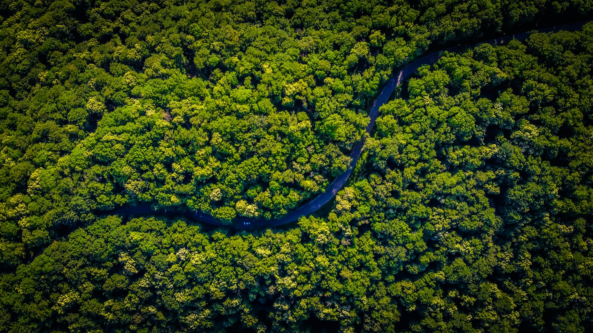
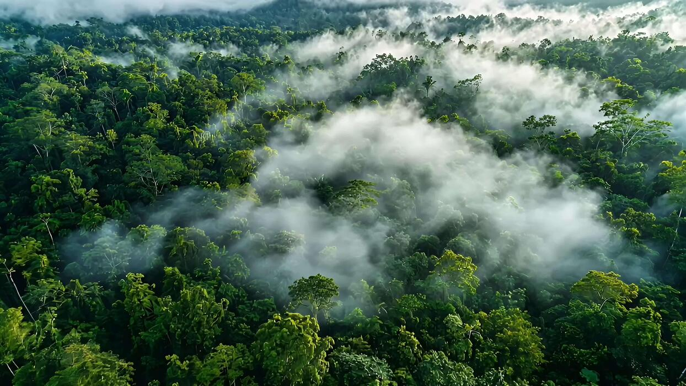
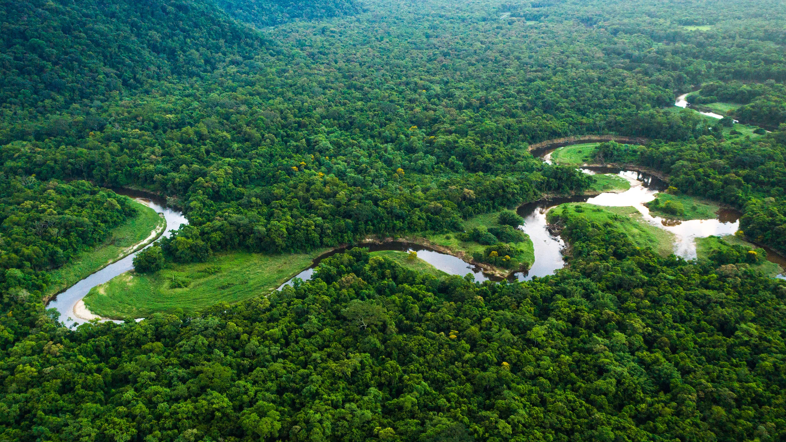

Ismerd meg az esőerdőt
Három kérdés, amivel érdemes kezdeni.
Mi az esőerdő?
Az esőerdők meleg, csapadékos területek, amelyek gazdag élővilágnak adnak otthont. Egész évben meleg van, és gyakran esik az eső.
Tudj meg többetHogyan befolyásolja életünket?
Az esőerdők fontos szerepet játszanak a bolygó éghajlatának és élővilágának fenntartásában. Megkötik a szén-dioxidot, és részt vesznek a víz körforgásában.
Tudj meg többetMiért fontos téma?
Az esőerdők védelme segít megőrizni a természet sokféleségét. Ha eltűnnek az erdők, rengeteg állat- és növényfaj is eltűnhet velük együtt.
Tudj meg többetAz esőerdő négy emelete
Az esőerdő olyan, mint egy többemeletes ház: minden szinten más állatok laknak.
Kiemelkedő fák
kb. 45 métertől felfelé
A legmagasabb fák koronái. Itt süt a legtöbb nap és itt fúj a legtöbb szél.
Lombkoronaszint
kb. 20-40 méter
Sűrű zöld tető. Az állatok nagy része itt él: majmok, tukánok, lajhárok.
Aljnövényzet
kb. 5-20 méter
Félhomály, kevés fény. Itt bújnak meg a ragadozók és a színes békák.
Erdőtalaj
a föld szintje
Sötét és nedves. A lehullott levelek itt gyorsan lebomlanak.
Képek az esőerdőből

Az esőerdő madártávlatból

Reggeli köd a lombkorona fölött

Kanyargó folyó a zöld tengerben

Mosolygó majom a vízparton
Tudtad?
Pár érdekesség az esőerdő lakóiról.
A lajhár naponta akár 15-20 órát is alszik.
A tukán csőre hatalmas, mégis meglepően könnyű, mert belül méhsejt-szerkezetű.
A kapibara a világ legnagyobb rágcsálója.
Merre tovább?
Válassz egy oldalt, és fedezd fel tovább az esőerdőt!